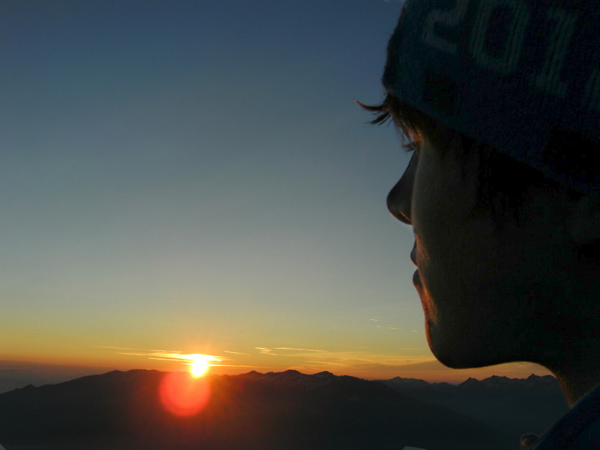
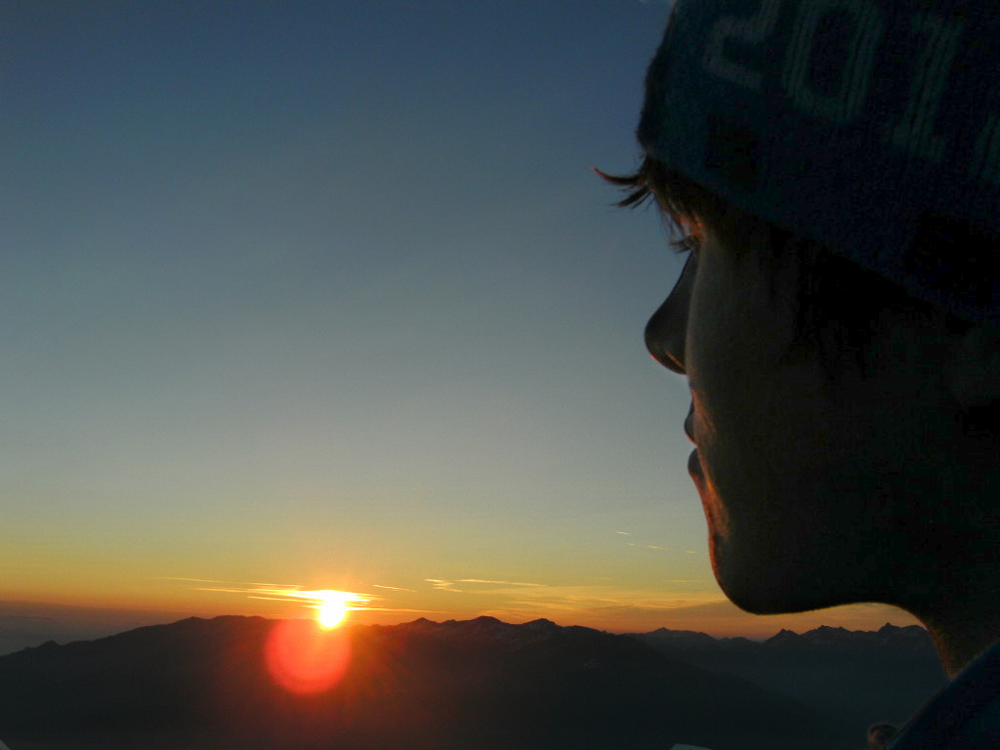

Benedikt Schmidt
Herzlich Willkommen auf meiner Homepage. In den folgenden Absätzen finden Sie die wichtigsten Informationen über meine Person, Ausbildung und berufliche Laufbahn.
Persönliches
Man kann Menschen mit vielen Worten beschreiben, blumige Adjetive wählen und tiefgehende Einblicke in deren Gedanken gewähren. Meine Beschreibung fällt hingegen kurz und knapp aus: Techniker bzw. Ingenieur. Letzteres darf ich mich leider noch nicht offiziell nennen, doch trifft es meine Person recht gut. Meine Interessen liegen vor allem im Bereich der Softwareentwicklung, jedoch kann ich mich privat, und natürlich auch im Zuge meines Studiums, zum Beispiel für Themen aus dem Gebiet der Elektrotechnik begeistern. Insbesondere die Energieverteilung in elektrischen Netzen hat es mir dabei angetan. Meine wahre Leidenschaft liegt jedoch eindeutig in der Softwareentwicklung, hier strebe ich stets Perfektion an, auch wenn ich sie leider nie erreichen werde. Die Technologien dabei sind an und für sich irrelevant, meine Spezialität ist aber definitiv C++. Allerdings fühle ich mich in anderen Sprachen, vor allem objektorientieren, ebenfalls wohl. C# erachte ich zum Beispiel als sehr elegante Sprache, weshalb ich sie auch bereits für einige Projekte wählte. Ebenso interessiere ich mich für Webtechnologie, ein Produkt dieses Interesses sehen sie vor sich.
Genau genommen stellen ich dann aber doch nicht den typischen Techniker dar: Ich habe keinerlei Berührungsängste mit Menschen, ich gehe gerne auf sie zu um neue Kontakte und Bekanntschaften zu schließen. Nicht selten war diese Eigenschaft bereits sehr nützlich, insbesondere bei der Koordination von Teams an der Universität und bei der Absprache mit anderen konnte ich mich schon desöfteren profilieren.
Zuguter Letzt noch ein paar allgemeine Daten über mich: Ich wurde als Benedikt Schmekal am 26.09.1990 in Hall in Tirol geboren. Meine Eltern sind Günther und Bernadette Schmidt und derzeit wohne ich in Innsbruck sowie in München, wo ich mein Studium der Elektrotechnik an der Technischen Universität München absolviere. Ich besitze eine österreichische Staatsbürgerschaft und bin ledig.
Bei weiterem Interesse lade ich Sie gerne zum Stöbern in meinem Lebenslauf ein, damit können Sie sich dann selber einen Überblick verschaffen
Ausbildung
Zurzeit studiere ich Elektro- und Informationstechnik an der Technischen Universität München (TUM), das dazugehörige Bachelorstudium schloss ich bereits im Wintersemester 2013 ab. Im Grunde genommen bin ich mit der Wahl meines Studiums ein Wiederholungstäter, da ich zuvor die Höhere Technische Lehr- und Versuchsanstalt (HTL) in Innsbruck, Abteilung Elektrotechnik, absolvierte. In der Unterstufte besuchte ich das Adolf-Pichler-Platz Gymnasium in Innsbruck, konnte mich jedoch mit dem allgemeinbildenden Ansatz nicht so sehr anfreunden, weshalb ich im Anschluss für die Oberstufe an die HTL wechselte.
Außerdem bin ich seit Oktober 2012 in der glücklichen Lage ein Stipendium des Max-Weber-Programmes zu erhalten und somit zudem Mitglied im bayrischen Elitenetzwerk sein zu dürfen.
Eine weitere interessante Erfahrung in meinem Leben war ein drei-wöchiger Exkurs nach Trelleborg in Schweden als Austauschschüler während meiner Ausbildung an der HTL. Dort bekam ich die Gelegenheit die Berufswelt in einem anderen Land kennen zu lernen, sowie natürlich auch das Land und die Menschen dort.
| Oktober 2013 | heute | Master Elektro- und Informationstechnik, TUM | |
| Mai 2011 | Oktober 2013 | Bachelor Elektro- und Informationstechnik, TUM | Zeugnis, Leistungsnachweis |
| 2005 | 2010 | Elektrotechnik, HTL Anichstraße | Reife- und Diplomprüfungszeugnis |
| 2001 | 2005 | Unterstufe Realgynmasium, Adolf-Pichler-Platz | |
| 1997 | 2001 | Volksschule, Angergasse |
Berufliches
Bisher konnte ich bereits in den unterschiedlichsten Branchen vielfältige Erfahrungen sammeln. Hervorzuheben hierbei wäre meine Anstellung als Software Developer bei Datacon für einige Monate zwischen Grundwehrdienst und Studium. Aber auch schon während meiner Schulzeit absolvierte ich einige Praktika, als Elektriker, bei öffentlichen Verkehrsbetrieben, bei einem Energieversorger uvm. Zurzeit bin ich als Studentische Hilfskraft am Sprachenzentrum der Technischen Universität München tätig und für den Moodle-Support dort zustündig.
Wie Sie anhand der folgenden Tabelle unschwer erkennen können: Still sitzen in den Ferien ist nicht unbedingt meine Stärke. Dementsprechend häften sich über die Jahre vielfältige Erfahrungen bei den unterschiedlichsten Praktika.
| Juli 2012 | heute | Studentische Hilfskraft am Sprachenzentrum der TUM | |
| März 2013 | März 2013 | Werkstudent im Zuge der Bachelorarbeit am Lehrstuhl für Entwurfsautomatisierung der TUM | |
| September 2012 | September 2012 | Werkstudent am Lehrstuhl für Entwurfsautomatisierung der TUM | |
| August 2012 | August 2012 | Ferialarbeiter bei TIWAG | |
| September 2011 | September 2011 | Junior Software Developer bei Datacon Technology GmbH (inzwischen Besi Austria GmbH) | |
| Jänner 2011 | April 2011 | Junior Software Developer bei Datacon Technology GmbH (inzwischen Besi Austria GmbH) | Arbeitsbestätigung |
| Juli 2010 | Jänner 2011 | Grundwehrdienst als Hochgebirsjäger beim Österreichischen Bundesheer | |
| August 2009 | September 2009 | Ferialpraktikant bei EAE-Stöckl GmbH | |
| Juli 2008 | Juli 2008 | Innovationspraktikant am Institut für Mathematik der Universität Innsbruck | |
| August 2008 | August 2008 | Ferialpraktikant bei IVB | Arbeitsbestätigung |
| August 2007 | September 2007 | Ferialarbeiter bei Helga Stolz Vertriebsgmbh | Arbeitsbestätigung |
| Juli 2007 | August 2007 | Ferialpraktikant bei PKE Electronics GmbH | Arbeitsbestätigung |
| August 2006 | September 2006 | Ferialpraktikant bei den Haller Stadtwerken | Arbeitsbestätigung |
Projekte
Automatisierte Verdrahtung von analogen integrierten Schaltungen
Dieses Projekt führte ich im Zuge meiner Bachelorarbeit durch. Ausgangspunkt war ein Tool, Plantage genannt, welches mögliche Platzierung von Transistorschaltungen berechnete. Meine Aufgabe dabei war es dann dieses Tool um ein Framework zur automatisierten Verdrahtung zu erweitern, sowie eine einfache Variante einer automatisierten Verdrahtung zu implementieren. Leider kann ich den Code hierfür nicht veröffentlichen, da die Arbeit im Rahmen eines NDA durchgeführt wurde. Sie finden aber die interessanten Details in meiner Bachelorarbeit.
Ultimate Bomberman
Einer meiner Kurse, der Grundkurs C++, an der Universität beinhaltete die Programmierung eines Spiels, genauer gesagt einer Variante des bekannten Spiels Bomberman. Ziel des Kurses war eigentlich die Erlernung von C++, mein persöliches Ziel war hingegen die Leitung und Koordination eines Teams zu erlernen. Unser Team bestand aus 5 Personen und unser Endergebnis kann sich durchaus sehen lassen. Den Code finden Sie auf bitbucket
Calculator
Ein kleines Nebenprodukt des Grundkurses C++ war ein Taschenrechner, welcher ein paar nette Features wie zum Beispiel eine String-Eingabe besitzt.
RoboHockey
Aufbauend auf den Grundkurs C++ bot sich in meinem Studium die Gelegenheit den Leistungskurs C++ zu absolvieren. Wiederum lag das allgemeine Lernziel eigentlich eher bei den sprachlichen Fertigkeiten, mich reizte hingegen die Möglichkeit aus den Fehlern in der Teamkoordination vom vorigen Kurs zu lernen und meine Fähigkeiten hinsichtlich einer Projektleitung zu verbessern.
Aufgabe in diesem Kurs war es mit einem Roboter Hockey zu spielen und ein Endturnier zu gewinnen. Den Code hierfür kann ich leider nicht veröffentlichen, da eines der Teammitglieder dies nicht wünscht. Dafü gibt es die Videos vom Turnier auf youtube zu sehen.
Publikationen
Benedikt Schmidt (2013): Implementation of Routing in Plantage
Benedikt Schmidt (2012): Energiewende ja, aber nicht bei uns?
Martin Schroll, Benedikt Schmidt (2010): Software zur Berechnung von Netzen für die elektrische Energieverteilung in Nieder- und Mittelspannungsbereichen
Freizeit
In meiner Freizeit beschäftige ich mich hauptsächlich mit Sport, in allen möglichen Facetten. Ich habe jahrelang Tennis gespielt, auch manschaftsmäßig in der Tiroler Bezirksliga 2 und 3. Ebenfalls sehr lange betrieb ich Judo, insgesamt 12 Jahre lang. Aufgrund meines Studiums kann ich derzeit leider nicht so regelmäßig meinen Hobbys nachgehen, deswegen habe ich das Tennis zurzeit auf Eis gelegt. Wenn man nicht einmal wöchentlich dazu kommt macht es leider nicht sonderlich Spaß. Ich hoffe aber stark dass ich in baldiger Zukunft wieder mit dem Tennis durchstarten kann.
So als Übergangslösung, ein wenig Bewegung muss bei mir einfach sein, laufe ich zurzeit, gehe im Winter Ski fahren und gehe von Zeit zu Zeit klettern. Und sonst noch einiges anderes, was mir eben gerade unterkommt und sich gut ausgeht. Dabei haben es mir insbesondere die Berge angetan, egal ob zu Fuß, mit Tourenski oder auf dem Mountainbike.
 

Was jetzt nicht gerade in die Kategorie Sport fällt ist das Motorrad fahren, dabei erkunde ich mit Vorliebe die Alpen auf meiner Kawasaki ER-5. Oder auch mal die Toskana, wenn es sich ergibt.
Kontakt
Benedikt Schmidt
Mitterweg 63
A-6020 Innsbruck
benediktibk@aon.at